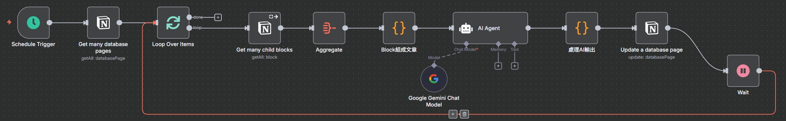
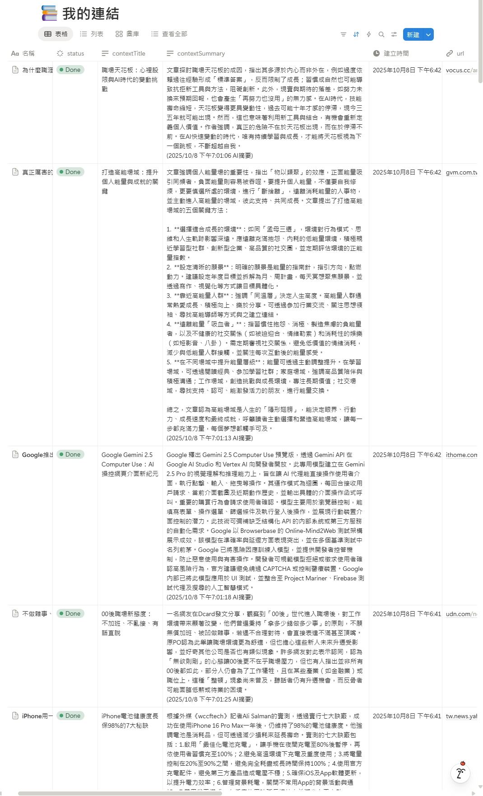
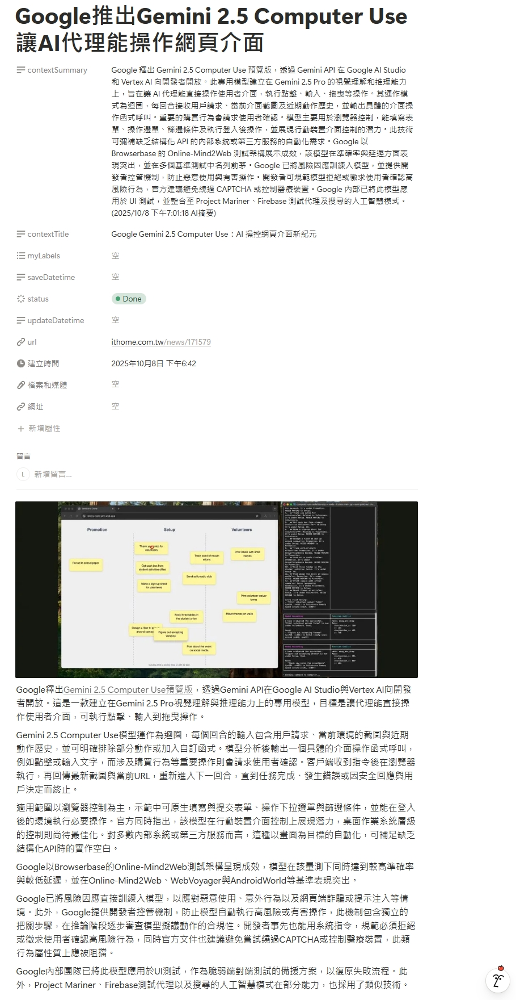

Notion AI 閱讀助理
讓 AI 成為你的專屬閱讀助理，自動消化 Notion 知識庫，生成精闢摘要與標題。
專案緣起：當 Notion 成為我的數位雜物間
身為一個熱衷於吸收各種雜學的部分工時 QA 工程師，我的 Notion 塞滿了從四面八方蒐集來的文章、報告和連結。原本期望它成為我的第二大腦，卻逐漸變成一個充滿未讀紅點的壓力來源——一個典型的「稍後閱讀，但從不閱讀」的數位雜物間。手動整理？想都別想，那點時間我寧可拿來超慢跑。
這個工作流，就是我為了解決這個窘境而打造的自動化解方。目標很明確：讓 AI 自動幫我閱讀，並告訴我重點是什麼。我選擇了 n8n，因為它能讓我快速串接各種 API 跟 AI 模型，用視覺化的方式快速實作我的想法，而不用一頭栽進複雜的後端服務建置裡。
技術核心：一個自律的資訊處理流
整個流程的核心，是一個自律的循環。首先，排程觸發器 (Schedule Trigger) 像個鬧鐘，每小時會去敲門，問 Notion：「嘿，有新來的文章嗎？」
接著，Notion 節點會透過 API 進行一次聰明的查詢，它只抓取我還沒產生過摘要的頁面 (contextSummary is empty)，這確保了資源不會浪費在重複處理上。
最關鍵的一步，是將頁面內容「餵」給 Gemini AI。這裡我下了一道精準的 Prompt Engineering 指令，要求 AI 扮演一位專業編輯，不僅要產出 500 字內的摘要，還要提煉一個畫龍點睛的標題，並嚴格要求回傳標準的 JSON 格式。為了確保穩定性，我還加了一個 Code 節點，專門用來解析並清理 AI 的回傳值，避免任何意外的格式錯誤搞砸後續步驟。
最後，工作流將乾淨的標題和摘要，透過 API 更新回 Notion 的對應欄位，並將狀態改為「Done」。一個完美的閉環就此形成，自此，我只要閱讀摘要，就可以知道我需不需要花時間點開完整文章來閱覽。
工作流展示
以下為此工作流的實際運行截圖：
n8n 整體工作流
整個自動化流程的鳥瞰圖，展示了從定時觸發、讀取 Notion、呼叫 AI 到最終更新回 Notion 的完整步驟。
產出成果：AI 摘要與標題自動回填
工作流執行完畢後，AI 生成的標題與摘要會自動填入 Notion 資料庫的對應欄位，並更新狀態。
AI 核心指令 (Prompt Engineering)
為了讓 AI 能穩定輸出我想要的格式與內容，我設計了這段 Prompt，明確定義了它的角色、任務、輸出格式與規則，這是確保工作流穩定可靠的關鍵。
從零到一：打造你的 Notion AI 助理
想親手打造一個一樣的自動化流程嗎？跟著下面的步驟，你也可以做到。
在開始之前，請確保你已經擁有：
- 一個可以正常運作的 n8n 環境（Cloud 或自架皆可）。
- 一個 Notion 帳號，並已建立好與 n8n 的連線。
- 一個 Google AI Studio 的 API 金鑰，以便使用 Gemini 模型。
這是我們的資料基礎。請在 Notion 中建立一個新的 Database，並確保它至少包含以下四個屬性 (Properties)：
| 屬性名稱 | 屬性類型 | 用途 |
|---|---|---|
URL |
Title | 存放文章連結的標題欄位。 |
contextSummary |
Text | 存放 AI 生成的摘要。工作流會以此欄位是否為空，來判斷是否需要處理。 |
contextTitle |
Text | 存放 AI 生成的標題。 |
status |
Status | 用於追蹤處理狀態，建議至少包含一個 "Done" 的選項。 |
當你使用 Notion Web Clipper 將文章存入此資料庫時，文章內容會成為頁面內容，而連結會自動成為 URL 欄位的值。
- Schedule Trigger 節點: 設定一個你喜歡的排程，例如每小時執行一次。
- Notion 節點 (Get Pages):
- Resource 選
Database Page，Operation 選Get All。 - 選擇你剛才建立的資料庫。
- 關鍵設定：在 Filter 中，設定條件為
contextSummaryIs Empty。這就是我們篩選新文章的祕密。
- Resource 選
- Loop Over Items 節點: 將 Notion 節點的輸出連接過來，讓工作流可以一筆一筆地處理文章。
- Notion 節點 (Get Blocks):
- 放在迴圈內，Resource 選
Block，Operation 選Get All。 - Block ID 使用表達式，指向迴圈中單個頁面的 ID：
={{ $json.id }}。
- 放在迴圈內，Resource 選
- Code 節點 (組合文章): 加入一個 Code 節點，貼上下方代碼。它的作用是將零散的 Notion Blocks 組合成一段通順的純文字，方便 AI 閱讀。
// 從每個 Notion block 物件中，只提取出 'content' 文字內容。 const contentArray = $input.all().map(item => item.json.content); // 過濾掉內容為空的區塊，避免產生多餘的空白段落。 const nonEmptyContent = contentArray.filter(content => content && content.trim() !== ''); // 將所有文字片段用「兩個換行符」組合起來，形成段落分明的文章。 const fullText = nonEmptyContent.join('\n\n'); // 以 n8n 的標準格式回傳最終結果。 return [{ json: { textContent: fullText } }];
這是整個專案最有趣的部分。加入一個 AI Agent 節點，並將上一步的 Code 節點連接過來。然後，將一個 Google Gemini 模型節點連接到 AI Agent 上。
在 AI Agent 節點中，貼入以下 Prompt：
=# 角色
你是一位專業的內容分析師與資深編輯，擅長將複雜資訊整理成結構化的 JSON 資料。
# 任務
請仔細閱讀下方提供的文章全文，並生成一個包含「標題」與「重點摘要」的 JSON 物件。
# 規則
1. **輸出格式**: 你的回答**必須**是一個格式完整的 JSON 物件，**不包含**任何前後的說明文字或程式碼標記 (例如 ```json)。
2. **JSON 結構**: 輸出的 JSON 物件必須包含以下兩個固定的鍵 (key)：
* `"title"`: 值為你為文章生成的精簡標題。
* `"summary"`: 值為你生成的重點摘要。
3. **標題要求 (title)**: 標題應簡潔有力，準確反映文章核心主題，長度建議在 20 字以內。
4. **摘要要求 (summary)**: 摘要必須客觀、精煉，準確捕捉文章的關鍵論點與結論，長度嚴格控制在 500 字以內。
5. **語言**: 請使用繁體中文。
# 文章全文
---
{{ $json.textContent }}
---這個 Prompt 的精髓在於「嚴格要求 JSON 輸出」，這讓後續的資料處理變得非常穩定。
- Code 節點 (處理 AI 輸出): AI 的輸出有時可能還是會夾帶非 JSON 的文字。這個節點的目的是「萃取」出純淨的 JSON 字串，確保後續節點不會出錯。
const rawAiOutput = $input.first().json.output; // 使用正規表達式，只提取出被大括號 {} 包圍的 JSON 內容 const jsonMatch = rawAiOutput.match(/\{[\s\S]*\}/); const cleanedJsonString = jsonMatch ? jsonMatch[0] : '{}'; const parsedData = JSON.parse(cleanedJsonString); // 重新建構一個乾淨的輸出物件 const result = { ai_title: parsedData.title, ai_summary: parsedData.summary }; return [{ json: result }]; - Notion 節點 (Update Page):
- Resource 選
Database Page，Operation 選Update。 - Page ID 使用表達式，指向最一開始 Notion 節點抓到的頁面 ID：
={{ $('Get many database pages').item.json.id }}。 - 在 Properties 中，將
contextTitle欄位的值設為={{ $json.ai_title }}，並將contextSummary設為={{ $json.ai_summary }}。 - 最後，將
status欄位設為 "Done"。
- Resource 選
- Wait 節點: 在迴圈的最後加上一個 1 秒的 Wait 節點，這是一個好習慣，可以避免因處理速度過快而觸發 Notion API 的速率限制 (Rate Limit)。
恭喜！儲存並啟用你的工作流，你的 AI 閱讀助理現在正式上線了！
成果與反思：從「收藏家」到「煉金術士」
這個專案最大的價值，是心態上的轉變。我從一個只會囤積資訊的「數位收藏家」，變成了一個能從資訊中提煉價值的「知識煉金術士」(???)。
-
降低認知負擔 現在看到好文章就安心存入 Notion，AI 助理會處理後續。我只需花幾十秒讀摘要，即可判斷文章價值，決定是否精讀。
-
知識庫的重生 有了統一的標題和摘要，還有分類欄位跟標籤，從原本死氣沉沉的資料庫變得極易檢索。它不再是壓力來源，而是一個真正為我所用的數位資產。
-
我的工程師理念 再次驗證了我的理念：一個好的工程師，會善用工具將自己的時間價值最大化。n8n + AI，正是當下這個時代最強大的槓桿之一。